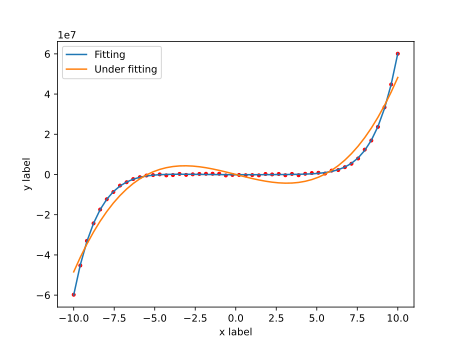
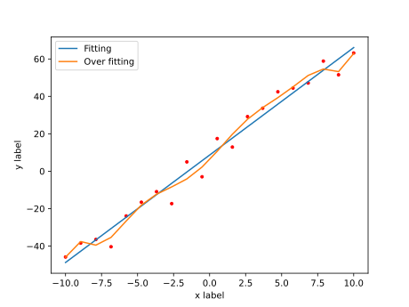
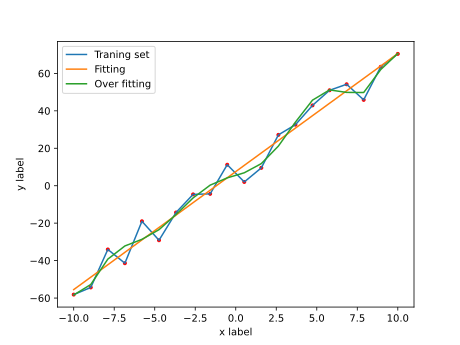

欠拟合与过拟合
# 欠拟合与过拟合
# 欠拟合
欠拟合指学习得出的模型并不能很好地模拟出数据的分布规律
问题的原因在于训练时，用于训练的模型不是很好，
当尝试用低阶模型去拟合高阶模型时，就会出现欠拟合的情况
比如[1]：

# 过拟合
过拟合指的是通过学习得出的模型，能很好地描述训练集中“特征与标签”的关系， 但是进行预测的结果很差，或者模型本身过于负责，并不适合实际应用
也就是说，过拟合就是对训练集中的数据的拟合效果好，但实际用的时候效果并不理想
下面是一个不太明显的例子，但我想应该足够体现出过拟合的概念了[2]：

或许加上原数据之间的连线更能体现：

# 解决方法
一个解决方法是使用 非参数学习算法 ，
局部加权回归算法 则属于这一类算法
详情参考 这篇文章
发布日期: 2021-10-26
更新日期: 2021-10-30